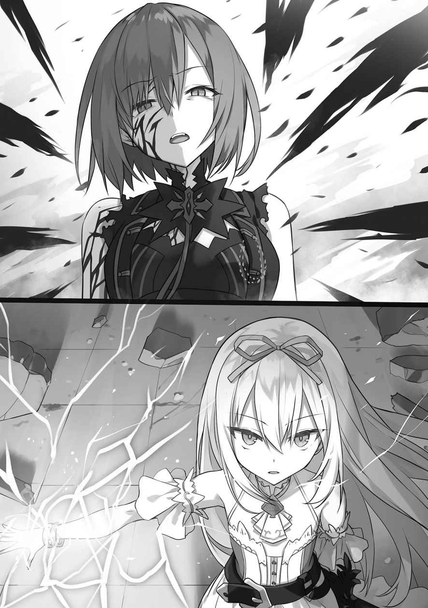
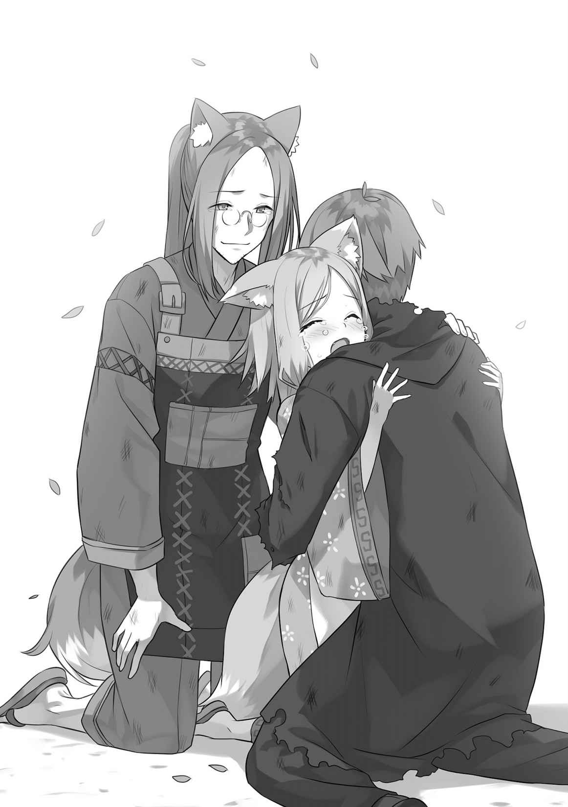

第４章
「植物魔法が使える者は大橋を修復せよ。簡易で構わん」「水魔法が使える者は手を貸せ。市街地の火を消す！」「負傷者は敵味方問わず手当を」「巨人さん、ドワーフさん！ 瓦礫をどかしてっ」「女、子供を大樹の外へ出すのは後にしろ」「抵抗する部隊には降伏を勧告せよ。グレック・オルグレンは捕虜に、グラント・オルグレンは逃げ去った！」
短くも激しい戦闘の終わった大樹前は混乱の
いないのは追撃を実行している竜人族と、最後の転移魔法でやって来られる『花賢』様と半妖精族。そして、学校長くらいか。
アンコ嬢と教授の教え子達は王都に残留し、王立学校地下を封鎖するそうだ。
「リチャード、部隊の再編、完了致しました。ヘイデン
ベルトランが
「いや、なに……言葉にはし
「……確かに」
熟練騎士も目を細めた。この場にこそ、王国の未来がある。守るだけの価値はあった。
小さく静かに、けれどはっきりと告げておく。
「……戦死した者達の名前を調べておいてくれ」
「……はっ」
しんみりしていると大樹の方から、先程までルーチェと語らっておられたレティシア様と母上がやって来られた。アンナとロミー、不満そうなリリーを従えている。
「リチャード」
「母上……よろしかったのですか？ リィネ達だけで行かせて？」
この場に、ハワード姉妹、エリー嬢とカレン嬢、そして、僕の妹のリィネ・リンスターはいない。異常な魔力を感知しオルグレンの
美しい
「リサに実の娘は斬れぬ。この姫は優し過ぎるのだ。娘を斬るくらいなら、自らが斬られた方が良い、と真剣に思いつめるくらいにはな。……否。母親とは
──ヘイデン、ハークレイとの戦いを制された母上が真っ先に向かわれたのは、大樹内で
そして、再会するなり抱きしめられ、泣きながら謝罪された。
『……エリン、許してちょうだい。私は
『リサさん、泣かないでください〜。アレンはああいう子なんです。あの子は私とナタンの誇りです。でも……出来るならば、私が代わってあげられたら良かった…………』
……母上が泣かれるところを初めて見た。
むくれているリリーが挙手。
「はいっ！ リィネ
「却下します♪」
アンナがあっさりと遮った。副メイド長は眼鏡を光らせる。
「リリー、貴女はメイド。後のことは御嬢様方に任せるべきです。王都に残られたマーヤ、そして、私達に転移を譲られたハワードのメイドの方々に笑われてしまいますよ？ それとも……リリー御嬢様も、アレン様が気になるのでしょうか？」
「!? うぅぅ……ロ、ロミーは意地悪ですぅ…………」
「母上、
救出はどうなさいますか？ と尋ねる前に、僕達の前に飛竜が降り立った。
背に乗っているのは、竜人族の大戦士イーゴン・イオ様。そして、黒髪褐色肌で男装をしている少女と魔法士姿の青年。二人共、気絶しているようだ。
僕等を認め、イオ様が青年と少女を片手で抱え飛竜を降り、そっと二人を横たわらせる。
「我等の前に、少女が飛び出して来たのだ。『この御方の手当をっ！ グレゴリーは既に逃亡………アレン様は……』とまで、言ったところで力尽きた」
「リリー」「はい〜」
母様が指示を出され、すぐさま、二人の治療を始めた。
数年前、王宮舞踏会にいた冷めた目をしたオルグレンの末子。名は。
「……ギル・オルグレン、か」
人々の冷たい視線。今や、『オルグレン』は、親の
黒髪着物姿の女性──モミジさんが少女へ駆け寄り、続いて、スイ君も追いかけて来る。
「コノハ！」「モ、モミジ！ 待てって！」
思い至る。ギル・オルグレンを救ったのはモミジさんの妹、か……。
大樹上空に花の形をした魔法陣が浮かび上がった。最終組だ。
リィネの話では、『勇者』様も来られる、とのことだったが。
オルグレンの屋敷がある方向からは、禍々しい魔力が発せられている。
一つは急速に力を小さくしつつあるが、もう一つは間違いなく……妹のものだ。
僕は
「……アレン、どうか、リディヤを……僕の妹を守っておくれ……」
＊
「エリー、リィネ、見えてきましたよっ！」
「あぅあぅ……も、燃えてます……」「一体何が……」
先頭でグリフォンを飛ばしているティナが前方を指し示し、私の隣を飛ぶエリーが
先程まで二つあった強大な魔力は、一つに減っています。ステラ様が注意を喚起。
「敵兵が潜んでいる可能性もあるわ。みんな、気を付けて！」
「「「はいっ！」」」「ステラ、私が先行するわ」
カレンさんが一気に蒼翠グリフォンの速度を上げられて、前へ。
荊棘の炎蛇がのたうっている屋敷上空へ侵入。眼下の光景に私達は絶句しました。
屋敷は炎に包まれ
周辺を見渡すと、黒い
突如、暴風が吹き荒れ、炎が散らされました。
必死にグリフォンを操り、目を凝らすと──見えてきました。
瓦礫の上に立ち、漆黒の軍服を着て、双剣を地面に突き刺している少女。
「リ、リディヤ……さん……？」
ティナが
どんどんグラントの顔が
カレンさんがグリフォンの背から飛び降り、黒の短剣を抜き放ち姉様へ急降下。
「何をしているんですかっ!!!!! 貴女はっ!!!!!!」
姉様が上を向かれ、グラントを無造作に屋敷の外れへ放り投げ、剣を抜かれました。
──十字雷槍と剣が激突！
大気が震え、無数の
ステラ様が私達に手で合図をしてきました。グリフォンを降下、地上へ飛び降ります。
「くっ！」
カレンさんは
──ゾワリ、背筋に寒気が走りました。
深紅の瞳は虚無。炎翼は生き物のように形を変容させ定まりません。
エリーが震え、ステラ様の左腕に抱き着いています。何か、何か言わなければ。
震える声で、言葉を口にしようとした──……その時でした。
『！』
私達は、一斉に空を見ました──あの方が来る！
姉様の
「こんな──……あいつのいない世界を守る偽善者なんかに用はないのよ？」
炎翼が揺らめき、数百の黒紅の
涼やかな声が響きました。
「
──白金髪の少女が瓦礫の上に降り立ちました。
手にあった焼き菓子を口に放り込み、ぺろりと指を
「……『勇者』アリス・アルヴァーン」
「弱虫迷子。『星』を見失って、歩き方すらも忘れたの？ 目を覚ませ」
「……偽善者。わたしはあいつのとこにいく。わたしのじゃまをするなら──斬る」
「寝言は寝て言え。そんなざまじゃ、永久に私には届かない」
姉様は目を鋭くされ、背中の八翼から、数千の
ステラ様が細剣と短杖を抜き放ち、私達へ号令を発しました。
「ティナ、エリー、リィネ、
「「「はいっ！」」」「……分かったわ」
私達は後退しステラ様と共同して、幾重にも魔法障壁を張っていきます。
アリスさんは迫って来る炎の荊棘の炎蛇の波を見つめ、
「はぁ……情けない。あの人がいないとこの程度。
すっ、と左手を伸ばします。バチバチ、と凄まじい雷が空間に遷移。
『勇者』様が囁かれました。
「──『
眩い閃光が走り、無数の炎の荊棘の炎蛇が一瞬で消滅。私達が構築した魔法障壁も次々と崩壊。暴風も吹き荒れ、様々な物が巻き上がり視界が閉ざされていきます。
こ、これは『魔法』という枠で語ることが不可能な威力です。
「エリー、風を」「は、はいっ！」
ステラ様が指示を飛ばされ──エリーの風魔法によって視界がある程度、回復。
姉様は!? 前方でアリスさんが困った顔になりました。
「……力を入れ過ぎた。弱虫迷子。目が覚め──む」
アリスさんは
姉様の八翼は剣のように鋭くなり、『炎麟』の紋章が頰にまで広がっています。
浮遊するその姿は……『悪魔』そのもの。
アリスさんが後退し、鋭い眼光を向けられます。
「私は四年前に言った。『離すな』って。離したら、自分一人で歩けもしないくせに、強がって、強がって、結果がこれ。…………ムカついてきた！」
勇者様が右手を上空へ向けました。再び──凄まじい魔力の高まり。
姉様もまた無造作に双剣を振るわれ、八
ステラ様とカレンさんが
「そんな……」「醜い……」
姉様の『火焰鳥』は
ティナとエリーは黙り込み、絶句。私は自然と身体が震えてきます。
これが……こんな魔法が『剣姫』リディヤ・リンスターの『火焰鳥』なの……？
アリスさんと姉様は私達の眼前で、魔法を撃ち合います。
「──『
先程を超える三本の閃光と衝撃波。残っている瓦礫や庭の樹木をへし折っていきます。
こんな状況で私に出来ることなんか……視界が晴れてきました。
「姉様がいない……？」「壁の上ですっ！」

私の
壁上では姉様が八翼を羽ばたかせていました。禍々しい黒紅炎の荊棘の炎蛇が地上にまき散らされ、炎上を拡大。八羽の『火焰鳥』も再顕現していきます。
──突然、ティナが一歩を踏み出しました。アリスさんを追い越します。
「同志？」
ティナが背筋を伸ばしました。
「アリスさん、ありがとうございました。ここから先は──私達がやります！」
「「えっ!?」」
私とエリーは手を取り合います。あんな状態の姉様を……兄様抜きで止める？
すると、『勇者』様は宝石のような瞳をぱちくりさせ──破顔。
「
アリスさんはそう言うと、跳躍し、最後方へ。
む、無茶です。私達五人がかりでも姉様に
そもそも、あんな『火焰鳥』を防げる筈──……あ。エリーと顔を見合わせます。
姉様が使われる本気の『火焰鳥』は正しく、全てを滅する炎。
いくら
なのに……アリスさんが私達の背中を押しました。
「赤いぴよぴよ、頑張れ。まだまだ勝負は分からない。……私の敵は頑張らなくていい。そんな胸は不謹慎。将来性まである。強い遺憾を表明。もぐ？」
「っ！ は、はい」「あぅぅぅ。ひ、
私達は背筋を伸ばし、前へ。
ステラさんとカレンさんは先に理解されたようで、既にティナの隣に立たれています。
ティナが、長杖を上空にいる姉様へ突き付けました。
「今のリディヤさんなんて、怖くありませんっ！ 先生の隣は私が
その
「……わたしのじゃまをするなら、ようしゃしない……」
「はいはい。泣き虫リディヤさんの脅しなんか」「あまり、怖くはないですね」
「!?」
突如、姉様を囲むように、無数の氷弾が出現。ティナとステラ様の『氷神弾』！
カレンさんが駆け出され、『雷神化』。
姉様は炎翼を剣に変化させ氷弾を迎撃。
「…………なまいき」
「……ごめんなさいっ！」「隙だらけもいいとこですっ！」
「!!!!」
氷弾に意識を取られていた姉様へ、エリーの風属性上級魔法『
その中には──十字雷槍を持たれたカレンさん！
動きが鈍い『火焰鳥』を次々と打ち砕き、姉様に振り下ろしました。
姉様は左の剣で迎撃されますが、
「っ!?」「ぬるいですっ!!!!!!」
姉様をカレンさんが押し込んでいきます。右の剣が動く前に、
「「「させませんっ！」」」
ティナとステラ様の氷弾とエリーの風鎖が殺到。氷の
姉様の表情に驚きが浮かびました。疑念が確信に変わります。
今の姉様は──……
魔力こそ
兄様と並ぶ、姉様の魔法式とは思えません。
片手剣を
「姉様！ 目を覚ましてくださいっ!!!!!」
「!?」
迎撃してきた炎翼を『火焰鳥』は食い破り、
「頭を、冷やせっ!!!!」
「っ！」
カレンさんが姉様を押し切り近くの瓦礫へと叩き落としました。土煙が立ち上ります。
……これで、目を覚ましてくれたらいいんですが。
ステラ様の隣にカレンさんが着地。ティナ達も
アリスさんの批評が聞こえてきました。
「ん。悪くはない。でも」
『！』
瓦礫をバラバラに切断し、姉様が姿を現されました。
「……どうして？ どうしてわたしのじゃまをするのっ!? わたしはあいつのとなりにいたいだけなのっ そのじゃまを、っ！」
「バカっ！」「今のリディヤさんを見たら」「アレン先生が悲しまれますっ！」
カレンさん、ステラ様、エリーが姉様との距離を一気に殺し、接近戦へ移行。
十字雷槍が
苦し紛れに放たれた姉様の斬撃をステラ様が短杖に発動させた『
踏み込んだエリーは拳と足に風を
三人がかりとはいえ、少しずつ……でも、確実に押していきます。
──普段は馬鹿馬鹿しいまでに強いあの『剣姫』を、です。
ティナが後ろ髪につけている純白のリボンを取り、長杖へ結び、掲げ、私を呼びました。
「リィネ！」「
……姉様は兄様が行方不明になられて以降、
そして、毎晩、押し殺した泣き声が御部屋からは漏れていました。
もう姉様の心と身体は限界を──ステラ様とエリーが
「くっ！」「きゃっ！」
カレンさんは姉様と互角に渡り合われていましたが、二人がいなくなったことで、姉様の双剣の圧迫が増加。背の八翼も
「これぐらいっ！」
雷槍で一気に薙ぎ払いますが、振るわれた双剣を
「リィネ！」「任せてっ！」
私も姉様へ突撃。双剣の一撃を真正面から受けとめます。
速い……けれど、軽い。
──違う！ 違うっ!! 違うっ 『剣姫』はこんなに弱くないっ!!!!!
姉様の瞳に浮かぶのは焦燥。
『どうして私は、この子達を圧倒出来ない？』
当たり前ですっ！
『剣姫』の隣には、いつも『剣姫の頭脳』が──兄様がいました。
今の姉様は深い悲しみと……兄様を
そんな、そんな……
「弱虫『剣姫』には負けません！ 私は──私達は兄様の教え子なんですからっ!!」
発動した二
剣身が紅に染まっていき──私はリンスター公爵家の秘伝『
「!?」「正気に戻ってくださいっ!!!!!」
姉様が左手に持つ片刃の魔剣が砕けました。衝撃で軍帽が舞い上がります。
「ティナ、今ですっ!!!!!」
「いい加減にっ、目をっ、覚ませぇぇぇぇぇぇぇぇ!!!!!」
薄
一陣の雪風と共に巨大な『
体勢を崩されていた姉様は右手の剣を振るわれようとし、
「終わりです」「させませんっ！」「リディヤ先生！」
カレンさんの投じられた十字雷槍、ステラ様の『蒼剣』によって剣が砕かれ、エリーは風鎖で炎翼を拘束。
そして
刹那──……姉様が
建物全体を覆うような猛吹雪が吹き荒れ、視界が白く、白く閉ざされていきます。
その間、カレンさん達が次々と私の
──ようやく、吹雪が収まってきました。
私は大氷塊と化している
「…………ティナ、やり過ぎです」
「し、仕方ないじゃないですか！ リィネだって『紅剣』を……先生のノートですか？ 私のノートには書かれていなかったのに!?」
「貴女にはまだ早い、と兄様が思われたからでしょう。私は違いますけどね」
「……王都では『ティナぁ、エリーぃ……』ってべそかいていたくせにっ！」
「か、かいていません」「かいていましたっ！」
「「っ！」」
「あぅあぅ、テ、ティナ
主席様と至近距離で
……こういうやり取りがとっても
氷塊が斬撃で切り裂かれ、崩壊しました。
『っ！』
私達は即座に臨戦態勢を取ります。……駄目、だったんでしょうか？
ゆっくりと姉様が、今や氷山と化している屋敷の
背中の炎翼と紋章は消失。左手に
吹き飛んでいた私の軍帽が舞い降りて来ました。
「…………」
姉様は無言で軍帽を宙で手に取られました。
スカートの泥をはたかれ──次の瞬間、
「落とし物よ。……強くなったわね」
「え？」「「「「!?」」」」
私の頭に軍帽。直後──この世のものとは思えない斬撃音。
美しい紅の
「……起きた？
「……ちっ！ 死ねばいいのにっ」
姉様は私達に反応すらさせず通り過ぎ、アリスさんに斬撃を
勇者様は一度も抜かなかった剣を
距離を取ると、姉様の剣が完全に砕け散りました。
アリスさんが「ふふん。私の方が強い」と勝ち誇り、納剣。
姉様は苦々しそうに睨みつけられた後、私達へ傲然と言い放ちました。
「あんた達、まだまだね。……
私は口元を覆ってしまいます。……良かった。本当に本当に、本当に良かった！
「リィネ御嬢様」
エリーがそっと抱きしめてくれたので、抱き返します。首席様が叫ばれました。
「そ、それが、暴走していた人の言う
「！」
ティナと姉様が突然、同じ方向へ鋭い視線を向けられました。
二人の右手の甲には紅と蒼の紋章が美しい光を発しています。
「こ、この魔力って」「間違いありませんっ！」「アレン様っ」「兄さんですっ！」
僅かに遅れて私達も感知。東北に向き直ります。
兄様の魔力が突然、東都郊外に出現しました。アリスさんが小さく
「……アレン。良かった。でも……」
正門が空中高く舞い上がり、倒れていた黒騎士が立ちあがりました。腕と足も再生しています。こんな時にっ！
アリスさんが切迫した声で命じられます。
「リディヤ、ティナ！ 行けっ！ あの人が泣いてる。その騎士は、雑な『
「──私の腕の見せ所ですね」
ステラ様が微笑され、細剣と短杖を交差されました。
カレンさんが片手を振られ、エリーも促します。
「とっとと行ってください」「す、すぐに追いつきます！」
姉様とティナは
「カレン、ステラ、エリー、リィネ、ここは任せるわ！ 小っちゃいのっ！」
「はいっ！ 私達は先生をっ！」
先にティナがふわり、と浮かび上がり、慣れない様子で
姉様も後を追われようとし──私を抱きしめ、耳元で
「……リィネ、ごめん。ありがとう」
「っ！ …………姉様ぁ」
炎翼の熱が頰を
「っ〜！」ティナの叫びを残し、あっという間に見えなくなりました。
「!!!!!!!!!!!!!!!!!!」
形の定まった黒騎士が咆哮しました。……まるで、
魔法を
「……どうか、もう安らかに眠ってください。いきます！」
＊
「……遅い。レフの
「ございません。グレゴリー坊ちゃま、御心を御
「……ちっ」
坊ちゃまは
私はその間も、油断せず隠蔽結界と魔力感知を継続する。
──
周囲は、植生豊かなこの地では珍しく、荒涼としている。
敵通信宝珠を傍受したところ、大樹へ向かったレフは、あっさりと敗退したようだ。
さもあらん。何しろ相手は『
既に
隠蔽結界は重ね掛けし、転移魔法の呪符も残っているが安心は出来ない。
早く脱出せねば……。最悪の場合、無理矢理、坊ちゃまを気絶させてでも。
私の思いを知らぬ坊ちゃまが片手で髪をかき乱される。
「……僕の読みは完璧だった。聖霊騎士の実験も出来たし、大樹の古書も獣に持ちださせ国外へ送り出した。王都が持たないことも織り込み済みだ。……なのに、西方が動くだと？ 戦略転移魔法をどうやってこんな短期間で発動させたんだっ!!!!!!」
王都陥落の急報が届いたのは、本日早朝。
王国西方最強魔法士と知られる、『花賢』チセ・グレンビシーと半妖精族。三大公爵家の練達の魔法士がいたとしても……僅か一日での早期発動は理に合わない。
まるで敵方に、魔法制御の熟達者が複数いるかのようだ。
──空間が
直後、出現したのはフード付きの灰色ローブ姿の男達。坊ちゃまが声をあげられる。
「レフ！」
「……申し訳ありません、遅参致しました」
先頭の男がフードを取り
周囲の男達は無言。フードを深く
聖霊教はともかく、レフ本人を信じておられる坊ちゃまが
「手に入れるべき物は得た。黒騎士の実験も成功したぞ。『蘇生』『光盾』、そして『石蛇』を埋め込む魔導兵は実現可能だ！ ギルは回収出来なかったが……」
「使い捨ての黒騎士はともかくとして──ギル・オルグレンを、ですか？」
ピクリ、とレフが眉を
聖霊教は
レフの様子を気にされず、坊ちゃまは話しかけられた。
「此処は東都に近過ぎる。脱出しよう。聖霊騎士団には連絡済みだ」
「……そうですな。『獣
「飢えて死んだか。『封』で死んだか。残念だったな」
──『剣姫の頭脳』。
リンスター、ハワード両公爵家、教授、『大魔導』という怪物からの信頼厚く、表舞台に登りつつあった
……それ程の者が
坊ちゃまが、子供のように瞳を輝かせレフの手を握り締めた。
「レフ、僕は此度手に入れた禁書と古書を読み込み、世界最高の魔法士になり、グレゴリー・オルグレンの名を大陸全土に
対して、男は無言。激しい違和感。私は引き離そうとし、
「坊ちゃま──……上ですっ！」
叫びながら、紡いでいた雷属性上級魔法『
直撃する寸前で次々と魔法が消失。敵の姿が浮かび上がってきた。
そこにいたのは
背には、ボロボロのローブを着て剣と長杖を持っている青年と、白の
私に気付かれず、隠蔽結界に侵入を果たす程の魔法士？
「……『剣姫の頭脳』、アレン……」
信じ
後ろを振り返り、幼女へ何事かを囁く。
「アトラは乗ってて」「！」「……岩の陰に隠れていようね?」
向き直り、青年が飛び降りて来る。幼女も後に続き、グリフォンが飛び立っていく。
坊ちゃまが動揺され、レフも苦々しく叫ぶ。
「なっ!?」「……貴様はっ」
着地し幼女が岩の陰へ。短剣を抜き放った男達に、青年は魔剣と魔杖を振るう。
「がっ！」「ぐっ！」「短剣が」「これ程、
「お、おのれっ！」
坊ちゃまが零距離から雷矢を発動されようとし──消失。魔剣の横薙ぎが襲いかかる。
「！ っ!?」
私は擬態を解き長杖の穂先に闇刃を形成し、反応出来ていない坊ちゃまの前へ。一撃を受け止める。魔法介入を防ぐ
……これ程とはっ！
「死ねぇいっ!!!!!」
腰の短剣を抜き放ち、レフが闇属性上級魔法『
青年は魔杖を横に薙ぎながら岩の
「！ !!」
岩の陰から顔だけを出した幼女が跳びはねている。白い獣耳と尻尾。獣人だ。
『剣姫の頭脳』が坊ちゃまとレフへ鋭い視線を
「
＊
「ぐっ！ き、貴様……獣擬きの分際でっ！」
「…………」
聖霊教の灰色ローブを着ているグレゴリー・オルグレンが、余裕がない様子で
短剣を右手に持っているレフは無言でアトラを凝視。僕は
指輪からの光は狂信者を指し示したまま。やはり、この男が術者。
問題は……グレゴリーを守るように前に立つ小柄な女性魔法士。練達だ。
レフが言葉を発した。
「……獣擬き。貴様、『
グレゴリーが女性魔法士を手で強引に押しのける。
「イト、どけっ！ 獣擬き、『雷狐』とは何だっ！
倒した
全員に濫造の『蘇生』が埋め込まれている。
「貴方では扱いきれませんよ。資料は持ちだしていませんし『封』は閉じられました」
「な、んだと……？ き、貴様、じ、自分が何を言っているのか、分かって……」
グレゴリーが
「レフ!!!!! 『炎魔』の資料──……え？」
「邪魔だ」
──レフの短剣がグレゴリー・オルグレンの身体を刺し貫いた。
グレゴリーの口から鮮血が
「ごふっ……な、何で…………？」
血のついた短剣を眺めながら、狂信者が冷たく言い放つ。
「決まっているだろう？ お前も我が
「レ、フ……」「貴様ぁぁぁぁぁぁ!!!!!」
イトと呼ばれた女性魔法士が
僕は風魔法でグレゴリーとイトを空中へ吹き飛ばす。
「っ！」
公子を空中で抱きかかえ、滝へ落下していく女性魔法士の帽子が飛んだ。
頭には二本の小さな角。……魔族!? レフがわざとらしい賛辞をしてきた。
「よく反応出来たものだ。……貴様は危険だ。我等の悲願達成の障害たり得る」
魔法士達の前面に構築されている未知の反射系魔法式。
対魔法士戦闘を極めている戦闘集団。全員が聖霊教異端審問官か。
「故に聖女様の御言葉に背いても、私、使徒レフが殺す！ くくく……王国公爵家にはウェインライトの血が流れている。つまり──同志達よ、殉教の時、来たれりっ！」
『オオオオオオオオオオオオオオ!!!!!!!!』
十数名の灰色ローブ達が三列に分かれて膝をつき、祈りの姿勢。
レフが、血に
毒々しい程の深紅。地面に亀裂が走り、木々が枝を大きく揺らす。
それに干渉しようとし──
「！ 魔法が使えないっ!?」
目の前で、レフの短剣に、男達の魔力が吸い上げられ供給機関と化していく。
レフは
「素晴らしい。これが世界樹の力！ これならば、多少血が薄くても……受けてみよ。大魔法を捕らえし戦略拘束結界『
八本の禍々しい血鎖が襲いかかってくる。アトラが後ろから叫ぶ。
「!!!!!」
「……大丈夫だよ。君は──何があっても僕が守るから!!!!!!」
次の瞬間、僕は右手の剣を振り上げ。戦略拘束魔法を受け止めた。
経験してきた中でも最大の激痛。無数の刃で右腕が切り裂かれているようだ。
リナリアの魔剣がなかったら、この時点で何も出来なかっただろう。
祈り続けている魔法士達の全身から鮮血が噴き出し、『
──永遠とも思える時間が過ぎさり、八本の血鎖が崩れ散った。
僕の右手から魔力の尽きた魔剣が零れ落ち、地面に突き刺さる。
レフが楽しそうに
「未完成、かつ短時間発動とはいえ……
再び、短剣の切っ先に精緻極まる魔法式が浮かぶ。
「──二発目といこう」
深紅の戦略拘束魔法が再発動。僕は左手の杖を突き出し、防御。
背筋に戦慄。
「っ！」
苦鳴をあげそうになるのを、歯を食い縛って耐え向きなおる。
──八つの血鎖は形を変化。八本の異形の血槍となり僕を貫こうとしていた。
「『炎魔』が創造せしこの魔法は進化する。同じ方法で凌げる、とは思わぬことだ」
厄介極まりないっ！ 右手は動かず魔法も使えない。直接触らない限り介入も出来ず、可能なのは身体強化のみ。ふっ、と息を吐く。
──結論、八槍全て凌ぎきり、直接介入で消す。
超高速で僕を貫かん、とした槍の一本目を見切り、
そうして
周囲の景色は大きく変容。大地そのものが紅に染まり、木々が枯れ果てていく。
一発目の発動時に倒れた者達は、灰となって消え、二列目の者も半数が倒れている。
この光景を『奇跡』と呼ぶのなら、僕は聖霊教の全てを否定するだろう。
────二発目の発動が
左手から魔杖が滑り落ち、剣と交差するように地面に突き刺さる。
身体中に激痛。足下には
レフを
「惜しい、実験動物として実に惜しい……だが、いい加減死んでおけ!!!!!」
血の乾いた短剣が三度、掲げられた。
左右の手の感覚は既にない。足も槍を
けれど……倒れている人数的にこれが最後の一発。
「！ !! 」
「来るなっ！」
駆け寄ろうとするアトラを止める。瞳には大粒の涙。
「大丈夫だよ、大丈夫」
「……
「断固、御断りします。僕はある少女と約束したんですよ。この子を守ると！」
「ならば…………今度こそ死ね!!!!!!!!!」
三発目が発動。深紅の魔法式が浮かび上がり──瞬間、地面に叩きつけられる。
「っぐ!!」
一気に侵食が進み、身体の自由が奪われていく。
「！ !! !!!!!」
「アトラ、駄目、だ。今の内に、逃げ、て……」
「!? !!」
いやいや、と幼女が泣きながら結界外でいやいや。
……僕は駄目な
唇から流れる血は無視。見飽きてきた介入を無理矢理押し戻し、立ち上がる。
狂信者の瞳には明確な恐怖。
「……ば、化け物めっ！ さ、三発もの『八神絶陣』を
「人を、使い捨てに、することを、許容している……貴方の方が化け物、です、よ」
「だ、黙れぇぇぇぇぇ!!!!!!!」
魔法が更に強まるも──深紅の魔法式が砕け散った。祈りを
アトラが僕へ駆け寄り、
「駄、目だ……お逃げ……」
レフは
狙いはアトラ！ 幼女を
直後、僕は鎖に
「はぁ、はぁ………手間取らせおって……」
息を切らしたレフが近付いてきた。防御も出来ないまま、腹を何度も蹴られる。
「がはっ！」
「泣け！ 叫べ！ 命乞いをせよっ！」
「…………ア、トラ、お逃げ」
「！ !!」
幼女は動かず
「……貴様も『雷狐』も結界の余波でまともに魔法を使えぬようだな。ならば」
「ぐっ」
レフに髪を
「『雷狐』が
「──……誰がそんなことさせるかよ。僕は約束したって言っただろうっ！」
「なっ!?!!!!」
感覚を無視して右手で鎖へ触れ、指輪に残っていた
全魔力を注ぎこみ──炎属性中級魔法『炎神槍』を零距離発動。
「馬鹿、っ!?」
炎槍がレフの身体を貫き、吹き飛ばした。僕は荒く息をつき、立ち上がる。
自分の手首が目に入った。呪印が消えていない。思考が激しく警鐘を鳴らす。
──奴自身も狂信者なんだぞ？
レフが、むくりと立ち上がり疾走。腹に開いた傷が塞がっていく。『蘇生』！
────僕を庇うアトラに刃が突き刺さった。
時は止まり、言葉を
アトラは振り返り、震える手で『
「アトラ、アレン、好き。大好き。ありがとう。──……生きて」
手を伸ばそうとする僕の前で………………アトラの身体はこの世界から消滅した。
宙を舞う紫リボンを手に取ると、
「うぁぁぁぁぁぁぁぁぁぁぁぁぁぁぁぁぁぁぁぁぁｌ!!!!!!!!!!!!」
紫リボンが僕の血で汚れていく。
守る、と僕はあの優しい魔女に誓った……誓ったのにっ!!!!!
レフは
「ば、馬鹿な！ だ、大魔法が、み、自らの意思で人を守る、だと!? ありえぬっ！」
歯を食い縛って激痛を無視し、僕はリボンを懐に仕舞い拳を握り締めた。
錯乱していたレフが動きを止め、血走った瞳で僕を見てくる。
「……貴様、何のつもりだ？」
「──……そんなの決まっているだろう？」
間合いを一気に殺し、左手で顎へ掌底。踏み込み、思いっきり腹へ右正拳。レフの膝が折れ、短剣が地面に落ち、懐から小さな硝子瓶が二つ転がり落ちる。中身はどちらも空。
首に付けた聖霊教の印が不気味に光っているのが見えた。
「がっ！」「…………お前を倒すんだよっ」
降りてきた頭へ全力の回し蹴り。骨が砕ける気持ち悪い感触。
狂信者が声もなく吹っ飛び、地面に倒れる。身体全体が悲鳴。再度無視し短剣を拾う。
「起きろよ。『蘇生』を埋め込んでいるお前に、打撃が効く
「…………最後の最後まで」

レフが立ち上がった。
砕いた頭蓋骨は既に再生。大穴を開けた筈の腹も埋まり、傷口すら残っていない。罵声。
「
「あの子の名前はアトラだ。…………忘れるなっ！」
間合いを詰め、一切の容赦なく拾った短剣でレフを刺し貫き、魔法を
「な、き、貴様ぁぁ……
レフの瞳から光が喪われていく。短剣を引き抜き、最後の力で蹴り飛ばす。
なんで、動けるか？ って。激しく痛む心臓を押さえる。
──無理矢理、魔法で命そのものを削れば、人間、多少の無理はきく。
両膝が落ちる。左手の握力も完全に喪われ、短剣が地面へ突き刺さった。
視界がぼやけ、身体が揺れる。──嘲笑。
「くっくっくっ……そうか、そうか、貴様、自らの命を削ったのか。無駄だがなぁ」
レフが立ち上がり、手に黒針を生み出した。
この魔力……魔獣『
狂信者は勝ち誇った笑みを浮かべ、近寄って来ようとし──……激しく吐血した。
「!? な、血だと？ 本物により近い『
体内から暴走した無数の針が飛び出し、狂信者が悲鳴をあげる。
動きまわるうち、レフの身体は崖際に。足を滑らせ、
「あ……ひぃあああああああああ!!!!!!!!!!!!!!!!」
絶叫しながら、滝へと落下していった。
──先程、短剣をねじり込んだ際、魔法式に干渉、式を変えた。
『蘇生』が埋め込まれていても、それを内部から暴走させるなら話は別だ。
「…………少しは苦しめよ、狂信者」
吐き捨て目を閉じる。身体が倒れ、意識が暗くなっていく。
ごめんなさい、父さん、母さん……ごめん、カレン……。
リナリア……僕は駄目な男です。
ティナ達の行く末、見たかったなぁ。
──……ごめん、リディヤ。
後頭部が温かい。誰かに優しく頭を
目をゆっくりと開け──……僕に膝枕をして顔を
「…………やぁ、リディヤ。髪型を昔に戻したのかい？」
「……バカ。バカバカ。大バカ！ ……アレンのバカっ」
リディヤは僕の右手を両手で取り、自分の胸へ押し付けた。
優しく優しく握りしめ、僕を真っすぐに見つめてくる。瞳には大粒の涙。
「別に、私はあんたがいなくても、平気…………だったんだから、ね？」
「うん」
「私はあんたなら絶対、絶対大丈夫だって……信じていたんだからね？」
「うん」
「…………私は、あんたがいなくても…………アレンがいないと…………」
そこまでが限界だった。少女は
こんなに泣かせたのは黒竜戦以来だな……。
左手でリディヤの頭を撫でていると、近づいて来る魔力が分かった。──ティナだ。
治癒魔法の光が止まり、僕は上半身を起こし公女殿下へ話しかける。
「リディヤ」「……謝ったら、本気で怒る」
公女殿下が顔を上げた。目は真っ赤だ。右手を伸ばしくすんだ紅髪を
「……ありがとう。来てくれて……」
「……バカぁ。アレンの大バカ……」
リディヤはますます僕の右手を強く強く、自分の胸に押し付けた。
出来る限り普段の調子で話しかけようと口を開く前に──大水柱が上がった。
「「！」」
滝下から出現したのは、巨大な蛇の首。
身体中に灰色の魔法式が
口を開き苦鳴。──レフ!?
『アアアアアア!!!!!! 苦シイィィィゥ!!!!! 聖女様、ナゼ、ナゼ、ナノデスカァァァァァ!!!!! ナゼ、ワタシノ印ニ『石蛇』ヲヲヲヲヲヲ!!!!!!』
「……
リディヤは大蛇へ容赦なく八翼の『
「えぇぇぇぇぃっ!!!!!」
次いで──上空から『
背に氷の双翼を広げたまま薄
リディヤが不満を
僕はティナに浮遊魔法を発動し、速度を緩和。操作し、地上へ。足が着いた瞬間、
「先生っ!!!!!」
僕に抱き着こうとし、
「はーい。駄目。これからは、ずっと私の番だから」
リディヤが首根っこを
「なっ！ 何て言い草ですかっ!! 今からは、ず〜っと、私の番の筈ですっ！」
「認められないわ」「認められますっ！」
「……二人共、緊張感を──っ」
手首に痛みを感じ、視線を向けると──呪印が不気味な光を放っていた。
まさか……業火と吹雪が吹き散らされ、人の背丈よりも長い無数の黒針が襲い掛かってきた！
リディヤが地面に突き刺さっていた魔剣、魔杖を引き抜き、切り払う。
「
僕はティナに抱きかかえられ上空へ。リディヤもすぐに追いついて来た。
薄蒼髪の公女殿下が僕の右腕を強く抱きしめながら、震える。
「せ、先生……あ、あれは、あれは、何ですか……？」
──小山のような巨大な亀の
リディヤが僕に『
「……この子が訴えてるわ。それに、あの姿」
「……うん。どうやら、そうみたいだね……」
──僕
それを、大魔法『蘇生』、王立学校の大樹、大精霊『石蛇』の力を用いて無理矢理、
「先生っ！ 動きますっ！」
ティナの注意喚起。身体中、針だらけの八本の蛇首を持つ怪物は上空の僕達を無視。
それぞれの頭に無数の目が浮かび、絶叫した。
『──世界樹ヲ我ガ手ニィィィィィ!!!!!!! 聖女様ガァァァァァ!!!!!! ソレヲ
周囲の森林から、一斉に鳥や魔獣が逃げ去っていく。
怪物は僕等を無視。東都へ向けて進撃を開始した。……世界樹？ 大樹のことか？
この魔力量。大樹を
急いで止めないと──両腕を強く抱きしめられる。
リディヤとティナは瞳を潤ませ「「…………」」無言で訴えてきた。
お
「リディヤ、その魔剣を使っておくれ。銘は『
「！ ふ、ふ〜ん。す、少しは、道理が分かるようになってきたじゃない♪」
「ティナも手伝ってくれますか？ 行きましょうっ！ あと、通信宝珠を」
「！ はいっ！ はいっ!! どうぞ」
二人の羽が輝きを増した。一気に加速。東都へ。
通信宝珠を受け取り、『銀華』を握り締める。アトラ……力を貸しておくれ。
瞑目し祈った後──僕は宝珠へ向け、語り始めた。
＊
『──これを聞いている東都の人達全員に告げます。僕の名は
大樹内の図書館。
戦いが終わり、外へ出られると聞き準備をしていると、
「！ ロッタお姉ちゃん」「お兄ちゃんの声……！」
この一ヶ月、ずっと一緒にいる狐族のチホとイネが抱き着いてきました。
「外へ出てみようか？」
「「うん！」」
幼女の手を引き、歩いている合間にも声は続きます。
『繰り返します。目標は大樹です。取り込まれれば、東都そのものが吹き飛ぶかもしれません。急ぎ、御老人、女性、子供達の避難を。間に合わない場合は地下水路へ』
大樹の外へ出ると、みんなが通信宝珠に耳を澄ませていました。
狼族族長オウギ様の御子息のトネリさんは一人で
『僕は怪物を止めます。現在、リディヤ・リンスター公女殿下、ティナ・ハワード公女殿下と共に大樹へ急行中です』
「あの馬鹿っ！ また無茶、むぐっ」「トマ」「トマ兄、静かにして」下の階で、子熊族のトマさんが
でも、気持ちは分かります。周りにいる自警団の方や、
……私だって子供じゃなかったらっ！ チホとイネが手を握りしめてきました。
通信宝珠が次の言葉を発します。
『──けれど、今のままじゃ間に合いません』
みんな一斉に顔を上げました。ドクン、と心臓が大きく跳ねます。
『だから、お願いです。どうか……どうかっ！ 僕に……力を貸してくださいっ！ 東都をっ！ 僕達の故郷をっ！ 何より──大切な『家族』を守る
通信宝珠が点滅を止め、辺りが静かになります。
私達を新市街から大樹にまで送り届けてくれた、前
「……てめえら、分かっていやがるな？」
ダグさんは涙を零されながら、言葉を続けられます。
「……俺達ぁ、既に一度あいつに命を救われた。そして今また、あの馬鹿はっ！ 大馬鹿野郎はっ！ 俺達を、東都を守ろうとしていやがるっ。……俺達が自分達の都合で理不尽に傷つけ、
涙を袖で拭かれ、叫ばれます。
「──
『応っ!!!!!!!!!!!!!!』
大人達が拳を掲げ、獣人族の取り
「植物魔法が使える者は船を操る者以外、大樹へ。どんな無理をしてでも──戦略結界を発動させる！ 老人、女性、子供達と重傷者、捕虜は若手の自警団員と共に地下水路へ！ 東都の人族にも緊急で情報を送れっ！ ロロ、前線指揮は任せるぞっ！」
『心得た！』「了解した」
族長様達と自警団団長の豹族のロロさんが
エルフ、ドワーフ、竜人、巨人、半妖精。古い軍旗には『流星』が描かれています。
静かに問われました。
「……
皆さんが頷かれます。レティシア様は、遠くを見つめられました。──西方。
「……忘れもせぬあの日。我等が団長、『流星』は
レティシア様が視線を戻されました。
「分かっている……彼なら、『アレン』ならばそう言う。あやつは誰よりも……誰よりも優しい男だったからな。副長としては理解も出来た。だが……それでも…………」
「…………私は……私はっ！ ……あの時、本当は、こう言われたかったのだ……『一緒に来てくれ。そして、一緒に死んでくれ』……と……………」
つまり、それぐらいその人のことが──大好きだった、ということ。
「だが……だがっ！」
レティシア様が涙を拭われました。とてもとても、美しく
「今、
問われた西方の人達も泣きながら大きな笑み。それぞれの武器を抜き放たれます。
『──いざっっっ!!!!!! 我等、『流星』と共に戦わんっ!!!!!』
レティシア様は満足気に首肯されました。
「ならば、いざ戦わん。我等、『流星』と共にありっ!!!!! リサ、お主は？」
すると、リサ様は片目を
「……愚問ね。私はあの子とエリンに返しきれない大恩がある。娘の命と心を救ってもらったのよ？ これ以上の恩義がこの世界に存在する？ 一緒に行くわ。アンナ」
「メイド隊、準備完了しております♪」
控えられていたメイドのアンナ様が両手を合わせました。
さっきまで私達にお菓子を配ってくれていた、長い紅髪が
「アレンさんのお願いなら仕方ないですね〜。御主人様のお願いは聞かないとです〜♪」
「……『御主人様』？ ケレニッサ」「副メイド長、記録しました」「リリー、後で話があります」「あたし、会ったことねーんだよなぁ」メイドさん達は楽しそうです。
……憧れてしまいます。
レティシア様、リサ様達が動き出され、上空からは純白の蒼翠グリフォンが降りて来ました。背中には幼獣。一気に
ロロさんが、西方の
「イオ殿！ ファウベル殿！ ガング殿！ 団員を道案内に！」
「かたじけない」「ありがてぇが、俺達は少しばかり足がな……」「高台に布陣したい」
ダグさんが口を挟まれました。
「ドワーフは船に乗れっ！
「ふんっ……話せる獺がいるじゃねぇか。頼むっ！」
話されながら、大橋や大樹下の大水路へ向かわれます。
残られているリチャード・リンスター公子殿下が、額に手を当てられました。
「……自力で脱出し、もうリディヤを救い、次は東都だって？ これだから……」
「リチャード」
「近衛騎士とは、護国の剣であり、護国の
リチャード様は近衛騎士様達へ、ニヤリ、とされました。
「リチャード・リンスターは狼族のアレンの友だと自負している。幼い頃、友を見捨てる
殴る？ 私はチホとイネと顔を見合わせます。
けれど、騎士様達は楽しそうに笑われ──公子殿下が背筋をのばされました。
「──近衛騎士団、出るぞっ！ アレンを、僕等の戦友を援護するっ!!」
『はっ！』
「待って……待っていただきたいっ！」
「？ ……ザニ」
公子殿下を、縛られている敵方の老人が呼び止めました。後ろの捕虜の人達も見ています。いるのは偉い人達のようです。
「リチャード公子殿下、恥を忍んでお頼みもうす。
「……それは」
「我等は
老人は頭を地面につけ、叫びました。
「東都はギド様の、ハーグ殿の、ヘイデン殿の、吾輩の、ここにおる者達の故郷なのだっ！ 我等も大樹を仰ぎ見て生きてきた。どうか……この通り…………
『…………お願いもうし上げるっ!!!!!!!!』
老人の後ろにいたボロボロの騎士や魔法士達が一斉に地面へ頭をつけます。
──公子殿下が厳かに指示を出されました。
「捕虜の縄を解け。急げっ！ 時間がないぞっ！」
「おお……
近衛騎士様達が次々と捕虜の縄を解き、立ち上がらせていきます。
──胸が
みんなが、東都を、アレンさんを助けようとしている。チホとイネも泣いています。
残ったのは、数十名の半妖精族の方々と長杖を持たれたエルフの魔法士様──『大魔導』様と、純白の蒼翠グリフォンと幼獣だけ。
幼獣を抱えた半妖精の女の子が、グリフォンを
「チセ様、私達は……？」
女性は答えられず、
「さっきの獺はよいことを言ったね……私だって散々考えたさ……。助けられた私が生き延び、助けたあいつが死ぬ。一緒に死ねた『三日月』を狂おしく嫉妬したことだってある。……そこのエルフだって同じだろうがね」
「…………」「…………否定はせん」
『花賢』様は花帽子のつばをおろし、椅子から下りられます。
静かな、静かな告白。
「……でもね、ようやく、ようやく理解したんだよ……」
チセ様の涙が地面に
「私は……今日この日、この場所にいる
＊
「オオオオ……………………」
私達の目の前で荒れ狂っていた黒騎士が、白蒼の雪の中で灰になっていきます。
細剣と短杖を交差させ、浄化魔法を発動されているステラ様が、静かに告げられました。
「……ウィリアム・マーシャル。
私は隣のエリーに話しかけます。
「（ステラ様、凄いわね？ 浄化魔法を使えるなんて……）」
「（はひっ！ でも、リィネ
「（……ありがと）」
アリスさんが、うんうん、と頷かれながら片手で巨大な
「ん。
出てきたのは、突き刺さった黒い
「紫がぅがぅ」
「……その呼び方、確定なんですね。何ですか？」
『勇者』様は、後方で気を
「これは？」
「『深紫』。雷龍の短剣には劣るけど、
「！ そ、それって、歴代オルグレン公爵に引き継がれている物なんじゃ……」
私は息を吞み、エリーと目を合わせます。しかも、雷龍？
カレンさんが魔槍斧を握り締めると紫に染まっていき、外壁に向かって一振り。
──雷の斬撃は分厚い石の壁をあっさりと切り裂きました。
「凄い……」「わぁ、わぁ」
私とエリーが興奮していると、黒騎士の気持ち悪い魔力が完全に消えました。
『……御手を煩わせました……。
そこまで言ったところで黒騎士は灰となり、消えていきました。
ステラ様が細剣と短杖を納められ、息を吐かれます。
「ふぅ……」
「お疲れ様、ステラ。……今のって、兄さん考案の魔法でしょう？」
すぐにカレンさんが近づかれ、聞かれました。誇らしそうに
「ええ。もう、そろそろノート二冊目も終わるわ♪」
「……ふ〜ん」
心から
私も意見を表明しようとし──
「「「「！」」」」「……む」
東都全域を震わす大きな地鳴り。そして、異常で強大な魔力。進行方向は大樹!?
アリスさんが跳躍され、外壁の上へ。
「こ、これって……」「あぅあぅ……」「早く、兄さんの所へ！」
「みんな、落ち着いて。まずは大樹のリサ様へ状況を
ステラ様が冷静に指示を出され、
『──これを聞いている東都の人達全員に告げます。僕の名は狼族のアレン』
通信宝珠が……私達がこの一ヶ月、求め続けた兄様の声を発し始めました！
「「「「…………」」」」
聞き終わり、私達は
──恐怖で？ いいえ、違います。これは、これは……歓喜ですっ!!
まず、兄様が御無事だったこと。そして、何より──兄様に助力を求められたこと！
高揚を抑えられません。ステラ様も「アレン様……」と頰を染められています。
通信宝珠は引っ切り無しに明滅。味方は、全部隊が迎撃に参戦するようです。
兄様と直接話したいですが、一斉に話しかけてしまえば、大混乱になるのは必定。
今はとにかく──戦場へ！
「ステラ！ 私達も行きましょうっ！ 兄さんの御役に立たないとっ!!」
カレンさんが、『深紫』を掲げ、上空のグリフォン達を呼び寄せます。
表情だけでどれだけ嬉しいのかが伝わってきました。
地響きはどんどん強くなり、東都駅舎の鐘が引っ切り無しに鳴り響いています。
アリスさんが外壁を降り、着地。淡々と教えてくださいます。
「把握した。相手は魔獣『針海』を無理矢理
私とエリーは顔を見合わせます。破顔。
「問題ありません。だって」「アレン先生が一緒です！」
蒼翠グリフォンの首を撫でながら、カレンさんも兄様の懐中時計を取り出し、断言。
「兄さんがいてくれれば、私は誰にも負けません。リディヤさんにも、ステラにもです」
ステラ様が不敵に
「それはどうかしら？ 私は蒼翠グリフォンの羽とノートも二冊頂いたから♪」
「「「うっ！」」」「ひゅー。狼聖女。やるー」
私達は
ステラ様は恐るべき強敵になられました……私も頑張らないとっ！
美しい薄蒼髪の次期ハワード公爵殿下が、
「行きましょうっ！ アレン様を助ける為にっ！」
＊
グリフォンに飛び乗り、眼下を見渡すと──既に、各所で炎が上がっていました。
──黒煙の中に巨大な影。八本首を持つ亀みたいな大蛇？
次々と建物の陰から、攻撃魔法が放たれ着弾。視界が曇っていきます。
一部部隊が既に交戦中のようです。通信宝珠に母様から連絡が入ります。
『リィネ。状況は理解しているわね？ 既に先んじた東方諸家の部隊が交戦中よ』
東方諸家の部隊が交戦を？ アリスさんが私の通信宝珠をひったくりました。
「あ！ な、何を」
『あれは私や、魔女の姫と風の姫でも、おそらく倒しきれない。──
静かな託宣。通信宝珠からは息を吞む声。母様が応答されます。
『アルヴァーン大公の命に従います。──でも、倒せなくても、力は
『ん。私も準備をする』
アリスさんが通信宝珠を投げ返してきました。
……この人……本物の『勇者』様なんですね……。
『上空を飛ぶ者、攻撃中の者達へ告ぐ！ 我が名は巨人族のドルムル・ガング！ 今より、西方巨人族のお家芸を披露せんっ!! とくと見よっ!!!!!』
突然、通信宝珠から、
厚い雲を突き破り、数十に及ぶ巨大な岩石が、建物を破壊しながら進撃する『針海』へ降り注ぎました。東都獣人族の新市街、その高台に布陣しているようです。
目を疑うような光景……王都攻撃時の比ではありません。
『ッアアアアアアア!!!!!!!!!!!!!』
次々と直撃し『針海』が悲鳴をあげます。周囲の建物も破壊されていき、進撃が停止しました。その間も容赦なく降り注ぐ岩石の雨。土煙で姿が見えなくなる程です。
「みんな、気を付けてっ！」「き、来ますっ！」「退避してっ!!!!!」
ステラ様とエリーが警告を発し、カレンさんが叫びました。
土煙を突き破り、無数の長大な針が空中へ。岩石を迎撃し砕き、本体に届かないまま落下。『針海』は進軍を再開しました。時間稼ぎすらも困難だなんて。
カレンさんが
「？ カレンさん??」「こ、これは？」「カレン？」
「父さんが開発した物です。致命傷を防ぐことが出来ます。あの怪物に、私達の魔法は効果が薄い。直接攻撃で首を切り落とすしかありません。私の分は」
「エリーとリィネさんは持っていて。カレン、私は受け取らないわよ？」
ステラ様が話に割り込まれました。副生徒会長様が花付軍帽を触られます。
「……生徒会長様には、
通信宝珠に、男性の声が轟きました。
『ドワーフ族のレイグ・ファウベルだ！ ──俺に策がある』
『針海』の周囲を竜騎兵が飛び回り一撃離脱を繰り返しています。
その足下では建物に隠れながら、自警団と
怪物は鋭く長大な針を周囲に飛び散らし、建物、巻き込まれた人を吹き飛ばし、貫かれた飛竜や蒼翠グリフォンが落下していきます。
援護に行きたい思いを
エリーの風魔法で、地上の音や声がかなり伝わるのが
──レイグ・ファウベル様の提案は単純明快なものでした。
『あの化物は世界樹を狙っていやがるんだろう？ なら、後は
『針海』の動きが──大樹前の大広場まで指呼の間、という所で、突然、止まりました。見れば、巨大な足が地面にめり込み、固まっています。ドワーフ族の
『今よっ！ 一斉攻撃っ!!!!!』
私の隣でグリフォンを駆る母様の号令が響き渡り、四方から魔法が集中されます。
『コザカシイマネヲ、スルナァァァァァ!!!!!』
『針海』は無数の針で反撃し尾を振り回してきますが、攻撃は止まりません。
空中に黒い影が
巨人族の
無数の針で貫かれながらも
「レイグ！ イーゴン！」「分かって！」「いるっ！」
ドワーフ族の長と竜人族の長が、
押さえつけた首へ斬撃を放ちました。
『ギャァァァァァァｌ!!!!!!!!!!!!!!!!!!!!!』
首を切断。残りは七本。『針海』の絶叫が響き渡ります。
傷口が
ガング様が
ファウベル様とイオ様も離脱。全身は
それでも三人の老英雄は
「皆、見たかっ！」「不死なぞおらんっ！」「皆の力を結集すれば必ず倒せるっ！」
これが、伝説の『流星』を支えた方々！
「次は私達の番かと★」「お任せを」「はい」「おっしゃぁぁぁ！」
近くの建物の屋根から、アンナ、ロミー、ジーンが『針海』へ跳躍。
『針海』は鎌首を持ちあげ、口の中から針を乱射してきます。
「ロミー、ジーン、そのままで★」
アンナが両手を振るい、不可視の『
副メイド長は長柄の
「せいっ!!!!!」
一本の頭の真上から思いっきり叩きつけました！ 首が下がります。
「もらったぁぁぁぁ!!!!!」
無数の魔法が降り注ぐ中、ジーンが全力で斬撃を首へ振り下ろし──ガチンッ！
「っ!?」
隣の頭の口に
「油断し過ぎですね」
ケレニッサが大鎌を
でも、首は──
「ふっふっふっのふ〜♪ 真打は、遅れてやって来るって、決まっているんですぅ☆」
屋根の上を疾走し、紅髪を
針の弾幕が襲いますが、アンナの援護と花炎の盾で防ぎきり、
「えいやぁぁぁぁ!!!!!!!」
双大剣を一度、二度、と
『ヒギャァァァァァァ!!!!!!!!!!!!』
『針海』が絶叫をあげる中、リリーの『
再生を試みる傷口を大炎上させます。残りは──六本っ！
リチャード兄様とロロさんが、近衛騎士団へ命令をくだされます。
「後先を考えるなっ！」「打ちまくれっ!!!!!」
近衛騎士と自警団団員が魔法一斉射撃。『針海』の注意を地上へ向けさせます。
母様も私達へ合図を出され、グリフォンから
「ふふ……
レティシア様も後に続かれます。
エリー、ステラ様、カレンさんへ目配せ。アリスさんは大広場上空です。
グリフォンの手綱を放し、剣を抜き放ち──私達は『針海』へ向けて落下。
エリーの風魔法が発動し、どんどん加速。
私は『火焰鳥』、ステラ様は『
カレンさんも右手に十字雷槍、左手に魔斧槍『深紫』を構えています。
眼下では先んじて突撃を敢行された、母様とレティシア様が一本ずつ叩き斬った首を、炎と風で燃やし刻みつくしているのが見えました。神業ですっ！
『チョウシニ、ノルナァァァァァァ!!!!!!!!!!』
『針海』の
建物や木々が針山と化し、その周辺が石化していきます。
さしもの母様とレティシア様も後退を強いられ、他の部隊もまた攻撃を中断。
私達にも襲い掛かって来ますが、白蒼の
それでも突破され、私とカレンさんの魔札が砕け散ります。
怪物は罠から抜け出し、大広場へ。周囲全てを石化させていきます。まずいっ。
私よりもやや前へ出たエリーが、一切
「私だって、私だって……成長、しているんですっ!!!!!」
『針海』の前脚に炎・水・土・風・氷・光・闇の魔法が叩きつけられ、打ち砕きます。
七属性上級魔法!?
カレンさんが称賛されます。
「エリー、やりますね。でも──」
八発の雷属性上級魔法と一緒に首を強襲。十字雷槍と『深紫』で貫きます！
「兄さんの隣は譲りませんっ!!!!!」「異議があるわっ！」
次いでステラ様が『蒼剣』を振るわれ、凍り付いた首が宙を舞いました。残り二本っ！
私も七本目の首へ『紅剣』を全力で振るい、
「っ!?」
出現した数千本の石針に阻まれてしまいました。
八本目の一際巨大な首が私を指向し大口を開けます。ギラリ、と無数の牙の光。
直後──母様の『火焰鳥』とレティシア様の『暴風竜』、アンナの弦が石の枝を吹き飛ばし、
「はぁぁぁぁ!!!!!!」
私は全魔力を剣に注ぎ込み、遂に──七本目の首を切断っ！
最後の首が私へ
「リィネ
私を抱きかかえ、
「エリー!?」「平気ですっ！ これがっ！」
壊れ石化した金属札を見せてきます。御
通信宝珠からアリスさんとオウギの声が響き渡りました。
「ん。エリー、偉い。少しは認める。みんな、よくやった。ではいく──『
『皆、よくぞここまで持ち
八本の巨大な純白の雷柱が発生。更に先程のエリーのそれとは比べ物にならない規模の植物魔法が発動。『針海』を締め付けていきます。
でも──少しずつ、けれど確実に石化の範囲が侵食。
私はエリーに抱きしめられながら、
「ティナ！ 姉様！ ……兄様っ！ 後はお任せしますっ」
＊
僕達は石に
戦場にいる味方は、八つの内七本の首を落としてくれたようだ。それにしても、まさかルブフェーラ公爵家が動くなんて。ティナが長杖で指し示した。
「先生！ 大樹ですっ！ 怪物も大広場で止まっていますっ！」
『針海』は、無数の植物の根のような結界に捕らえられ、八つの白く輝く雷柱に打ち据えられていた。大樹の戦略結界と──上空を見やる。
大きな白翼を広げ、剣を抜き放った『勇者』アリス・アルヴァーン。
「リディヤ、ティナ、大樹前の大橋へ」
「分かったわ」「はいっ！」
大橋に降り立った僕達は、大広場の『針海』を確認。
首は再生も果たしていないものの、倒れる気配はない。
『勇者』の魔法に耐える……黒竜に匹敵するな。これで大樹を取り込んだら──。
僕は魔杖を前方へ突き出そうとし、よろめいた。
「っ！」「先生……そんな御身体じゃ……」
リディヤとティナが心配そうに、僕を支えてくれる。
再び引き籠り魔女の言葉を思い出し、不安そうな薄蒼髪の公女殿下へ
「ティナ、手伝ってくれますか？ あと、このリボンを
少女は大きな瞳を更に大きくした。
紫リボンを受け取り魔杖に結び付け、自分の杖を重ね、
「！ はいっ！ はいっ!!」
「…………私が支えるわよ」
リディヤも不満そうに魔剣を重ね、僕の手を握り締めた。
僕は目を
魔杖を前方へ掲げる。宝珠が
幾何学的で精緻極まる魔法式が幾重にも重なり、様々な色の紫電が飛ぶ。
ティナが驚き、リディヤが感嘆。
「！ こ、これって!?」「
「二人共、この魔法を忘れないでほしい。あの子が……優しい大精霊が僕へ遺してくれたこの美しい魔法を。この魔法の名は──」
耳をつんざく大音響。狂風と地鳴り。
戦略結界と雷がはじけ飛び、『針海』が前進を再開。大橋へ侵入してきた。
アリスが大樹上空へ一旦後退していく。
残った蛇の頭に無数のレフの顔が現れ僕達を見下ろし絶叫する。
『聖女様ガ、世界の死ヲ、望ンデオラレルゥゥゥゥゥゥ!!!!!!!』
身体中から無数の針を出し、身体を固定。口が大きく裂け、灰色の光が集束していく。
僕の手を、小さな手が
「ティナ！ リディヤ！」「はいっ！」「やっちゃいなさいっ！」
魔法を一気に解き放つ！
「──『閃雷』──」
衝撃が巨大な大水柱を幾つも発生させ、大広場や対岸の大橋が石化していく。
「っ！」
僕は唇を
このままじゃ──リディヤが僕の手に自分の手を重ね強く握り締めてきた。
「あんたの隣にいるのは誰？ 遠慮なんかするなっ!!!!!」
「そうだった、ねっ！」
泣き虫な公女殿下と魔力を深く深く
リディヤの背の炎翼が純白へと一気に変わった。
「ふふふ……そうよっ！ それでいいのよっ!!」
リディヤは不敵に笑い、一気に魔法の出力が安定。レフの光線を押し始める。
けれど──……押し切れないっ！ ティナが僕の手を強く強く握り締めた。
「先生！ 私も……私も
「……ありがとう。いきますっ！」
ティナとの魔力の繫がりを深める。公女殿下の背の氷翼が純白に染まっていく。
「！ ……先生、こ、こんな……こんな、無茶を…………」
ティナの小さな瞳から涙が
深く繫ぎ過ぎたせいか、僕の体験が見えてしまったようだ。リディヤが
「
「っ！ 分かってますっ！ お願い、力を……みんなを守る力を、私に貸してっ!!」
二人の『炎麟』と『
『閃雷』に紅と蒼が入り混じり、出力が桁違いに跳ね上がる。
「「「いっけぇぇぇぇ!!!!!」」」
灰の
『!?!!!!!!!! 聖女様……!!!!!』
無数のレフの目が恐怖に見開かれ、閃光が直撃!!!!!!
大衝撃波が発生し、大橋が
有視界外にまで閃光は伸びつづけ、雲を貫き──……やがて、消えた。
僕は魔杖を下ろし、リディヤと泣きそうなティナへ感謝する。魔力の繫がりを遮断。
「……二人共、ありがとう……僕だけじゃ、無理だった」
「別にいいわよ」「……先生」
終わった途端、リディヤは剣を大橋に突き立て、左腕に抱き着いてくる。
ティナは
「……せ、先生、今の……今の、魔法って……」「大魔法、ね？」
魔力を深く繫いだせいで、ある程度はバレているのだ。
「僕らが
「い・や♪」
「……ティナ、助けてください」
「無理です。……私、今、それどころじゃないので。もう少し、もう少し、待ってください。お願いします……ちゃんと、ちゃんと言葉に、しますから……」
ティナはそう言うと、黙り込んでしまった。
──僕が今、使った魔法は、アトラが
アトラのような存在達が使う本物の『大魔法』だ。
その威力たるや──視線を前へ向ける。
「うわぁ……」
──『針海』の姿は完全に
リディヤが頭を僕の肩に乗せてきた。自慢気に
「ふ〜ん♪ これであんたの名前も王国内外に
「……どうして、そんなに嬉しそうなのさ。まったく……」
これは、おそらく大陸動乱以来、実戦で使用された初めての大魔法だ。
幼い頃、使ってみたい、と望みはした。けど。
「…………こんな魔法より、僕は、今、君にいてほしかったよ、アトラ」
突如──世界が変わった。
ティナとリディヤの姿も消え、周囲には何もない。『白の世界』。
この感覚。ティナが『氷鶴』を暴走させた時と同じ。
「──そう。ここは私の、私達の世界」
長い薄
「──私達の同胞を……アトラを救ってくれたこと、感謝。この前はごめんなさい……。嫌なモノに無理矢理、動かされていた……あと、リディヤを助けられなかった……」
輝く深紅の長髪で同じく白服の幼女が頭を下げてきた。獣耳と尻尾を震わせている。
二人共、ジェラルドとやり合った際よりも、明らかに魔力が減っている。
何より、今まで聞いてきた声はもっと大人のそれだった。
「
「……名前は」「……私達の真名は奪われてしまった」
「奪われた？」
いったい誰に──……。
「そうか……大陸動乱時に使われ、君達がマガイモノと呼ぶ大魔法は」
「私達から奪い、『勇者』の魔法を模倣し
「……アトラは違うんだね？」
こくり、と少女達が頷いた。髪が
「あの子は守られた」「【双天】は私達を捕らえた。でも守ってくれた」
「……そっか。話をもっと聞きたいのだけれど、時間はなさそうだね」
白の世界はもう崩れ始めている。
膝を曲げ、少女達と視線を合わす。小さな手を伸ばし、僕の頰に触れてきた。
「貴方はあの子の
「でも」「アトラはそんなことを望まない」
「貴方は『鍵』」「私達と英雄達の【
「でも、お願い」「命を粗末にしないで。今回は幸運」
「ティナは泣いてたよ？」「リディヤも泣いてたよ？ わーんわーん」
「……リディヤは分かるけど、ティナも？」
『氷鶴』と『炎麟』が顔を
「ティナは良い子。でも、意地っ張り。……夜、一人でこっそり泣いていた」
「ああ……そうだね」
「リディヤは泣き虫。毎日、わーんわーん」
「うん……知ってる」
「「二人共、貴方を
「…………ありがとう」
はにかみ、お礼を言う。すると、少女達が僕の心臓に触れた。
手を繫ぎ合い歌い始める。
「私は、私達は」「死なない。不滅」
「でも、記憶は」「一度消えたらなくなる。消滅」
「だけど、あの子の想いは」「とてもとてもとても強い」
「……まさか」
光が差し──天空から白服の
小さな
「アトラ！ ……アトラ！」
「♪」
すぐさま
幼女二人は手を繫いだ。とても満足気だ。
「嫌な呪印は」「私達が力を合わせて解いた」
「そして、アトラが貴方の
「同時にアトラは力の多くを喪った」「力を使うには時間が必要。あと」
「戻るまでは」「人の姿も難しい」
アトラは姿を変えていき──小さな幼狐となり、僕の腕の中に。
少女達が僕を見上げる。
「アレン、私達の
「…………君達は？」
「希望は捨てない」「でも、星は広い。人の命は
幼狐を
「なら──君達のことも僕が必ず救うよ。ティナとリディヤを守るのと、呪印を解く為に、たくさんの力を使ったんだよね？ 約束する。今度こそ……約束は
二人は大きな瞳をぱちくりさせ、次いで満面の笑みを浮かべた。
「……ありがとう」「……嬉しい。また、
「うん。また、会おう」
約束を交わし、目を閉じる。
──『白の世界』が崩れ落ちた。
「きゃっ！ ……あんた、
目を開けると、腕の中に幼狐姿のアトラがいた。
突然、出現したその子を、リディヤが不思議そうに眺め、困惑中。
「リディヤ、その子がアトラだよ。魔力を繫いだから、分かるよね？」
「この子が？ ……ちょっとだけ待ってなさい。何処にも行かないこと!!」
幼狐を抱きかかえ、リディヤが僕から離れた。
地面に下ろし話しかけている。「あいつを救ってくれたのは感謝するわ。ありがとう。でも──いい? あいつは私のなの! 腕の中は私の指定席──え? お、同じベッドで寝たですって!?」
「ティナ？」
「……先生ぃ」
前髪は力なく折れ曲がり、大きな瞳にはたくさんの涙。身体は大きく震えている。
「申し訳ない。とても怖い思いをさせてしまいましたね」
「違いますっ 私……私っ……」
背伸びをし、ティナは僕の頰に触れた。血の跡をなぞる。
「先生なら大丈夫なんだって。平気なんだって。すぐ問題を解決してくださるって……
その後はもう言葉にならず、ティナは僕に
公女殿下を軽く抱きしめ頭を撫でていると、複数のグリフォンが見えた。
乗っているのはステラ、カレン、エリー、リィネ。皆、今にも飛び降りて来そうだ。
戻って来たリディヤへ告げる。アトラも僕の肩に帰還。
「ようやく終わったね。お疲れ様。あ、お説教は覚悟してる」
「なら、いいわ。良くないけど……いいわ。──……アレン」
リディヤは僕の正面へ回り込み、大輪の華が咲いたかのように、幸せそうな笑みを浮かべた。
「……おかえりなさい」
「……うん、ただいま」
「……えへへ♪」
紅髪の公女殿下は嬉しそうにはにかんだ。薄蒼髪の公女殿下が顔を上げる。
「……ぐすっ……せんせぃ、リディヤさんの悪行も、怒って、ください、ね？」
「悪行？」「！ ティナ」
魔力を深く
リディヤが
「あ、あんた、何を言ってっ!?」「……一番暴れたのはリディヤさんです」
多少、二人の距離も縮まったのかな？ アトラが小さな頭をこすりつけてきた。
「ん？ どうした──……」
僕は振り返り、
誰よりも早く一人の
けれど、決して決して、足を止めない。
僕も駆け寄らなければならない。でも、足が動かない。視界が涙で
「か、あさん……」
すると、女性──僕の母のエリンは目を見開き、大粒の涙を
「アレン!!!!!!」
そのまま駆け寄り、僕に飛びつくと、強く強く抱きしめてきた。
「まったくもうっ！ この子は無茶をしてっ 大樹様、ありがとう……ありがとうございます……。私の、私の世界でたった一人しかいない息子を返してくれて……ありがとう……ありがとう、ございます。………

「……母さん……ごめん、なさい……」
遅れて父のナタンもやって来てくれる。
僕は泣き続ける母さんに抱きしめられながら、父さんと視線を合わす。
父さんの瞳にも涙が浮かび、何度も、何度も頷き返してくれた。
リディヤとティナが緊張した面持ちで話しかけてくる。
「その……お
母さんは僕から離れ、二人の手を握り締めた。
「リディヤちゃん、ティナちゃん……。
「……っ」「……お義母様」
二人は心からの言葉に涙ぐむ。
僕はアトラを抱きかかえ、決意を口にした。
「これからよろしく。──君の仲間は必ず僕が助けてみせるよ」
「♪」